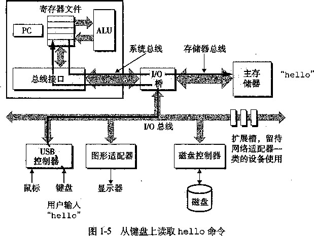
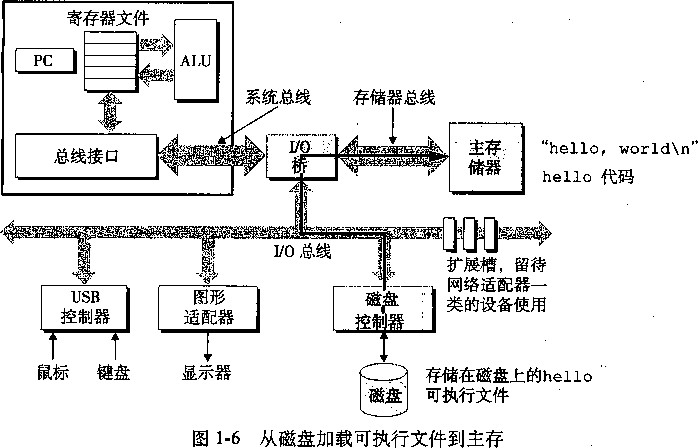
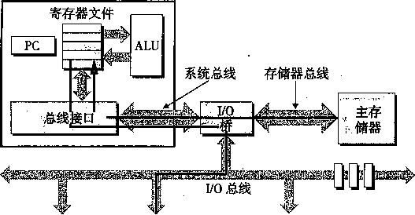
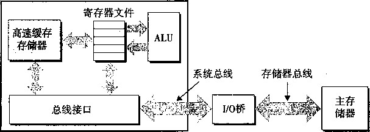
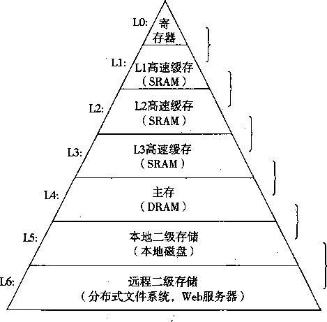
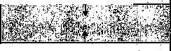
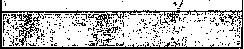
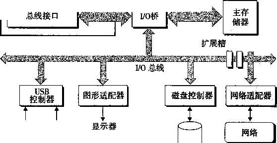
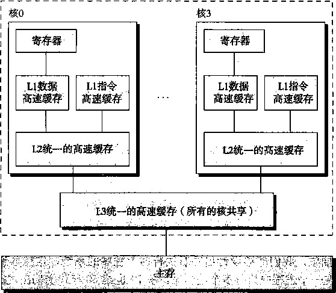

器（简单地说就是磁盘)。最初，可执行程序hello就存放在磁盘上。
每个I/O设备都通过一个控制器或适配器与I/O总线相连。控制器和适配器之间的区别主要 在于它们的封装方式。控制器是置于I/O设备本身的或者系统的主印制电路板（通常称为主板） 上的芯片组，而适配器则是一块插在主板插槽上的卡。无论如何，它们的功能都是在I/O总线和 I/O设备之间传递信息。
第6章会更多地说明磁盘之类的I/O设备是如何工作的。在第10章，你将学习如何在应用 程序中利用Unix I/O接口访问设备。我们将特别关注网络类设备，不过这些技术对于其他设备 来说也是通用的。
主存
主存是一个临时存储设备，在处理器执行程序时，用来存放程序和程序处理的数据。从物理 上来说，主存是由一组动态随机存取存储器（DRAM)芯片组成的。从逻辑上来说，存储器是一 个线性的字节数组，每个字节都有其唯一的地址（即数组索引），这些地址是从零开始的。一般 来说，组成程序的每条机器指令都由不同数量的字节构成。与C程序变量相对应的数据项的大 小是根据类型变化的。例如，在运行Linux的IA32机器上，short类型的数据需要2个字节， int、float和long类型需要4个字节，而double类型需要8个字节。
第6章将具体介绍存储技术，如DRAM芯片是如何工作的，以及它们又是如何组合起来构 成主存的。
处理器
中央处理单元（CPU),简称处理器，是解释（或执行）存储在主存中指令的引擎。处理器 的核心是一个字长的存储设备（或寄存器)，称为程序计数器（PC)。在任何时刻，PC都指向主 存中的某条机器语言指令（即含有该条指令的地址)。 e
从系统通电开始，直到系统断电，处理器一直在不断地执行程序计数器指向的指令，再更新 程序计数器，使其指向下一条指令。处理器看上去是按照一个非常简单的指令执行模型来操作 的，这个模型是由指令集结构决定的。在这个模型中，指令按照严格的顺序执行，而执行一条指 令包含执行一系列的步骤。处理器从程序计数器（PC)指向的存储器处读取指令，解释指令中 的位，执行该指令指示的简单操作，然后更新PC，使其指向下一条指令，而这条指令并不一定 与存储器中刚刚执行的指令相邻。
这样的简单操作并不多，而且操作是围绕着主存、寄存器文件（register file)和算术/逻辑 单元（ALU)进行的。寄存器文件是一个小的存储设备，由一些1字长的寄存器组成，每个寄 存器都有唯一的名字。ALU计算新的«§和地址值。下面列举一些简单操作的例子，CPU在指 令的要求下可能会执行以下操作：
•加载：把一个字节或者一个字从主存复制到寄存器，以覆盖寄存器原来的内容。
。存储：把一个字节或者一个字从寄存器复制到主存的某个位置，以覆盖这个位置上原来 的内容。
•操作：把两个寄存器的内容复制到ALU, ALU对这两个字做算术操作，并将结果存放到 一个寄存器中，以覆盖该寄存器中原来的内容。
•跳转：从指令本身中抽取一个字，并将这个字复制到程序计数器(PC)中，以覆盖PC中 原来的值。
处理器看上去只是它的指令集结构的简单实现，但是实际上现代处理器使用了非常复杂的机 制来加速程序的执行。因此，我们可以这样区分处理器的指令集结构和微体系结构：指令集结构
©PC也普遍地被用来作为“个人计算机”的缩写。然而，两者之间的区别应该可以很清楚地从上下文中看出来。 描述的是每条机器代码指令的效果；而微体系结构描述的是处理器实际上是如何实现的。第3章 我们研究机器代码时考虑的是机器的指令集结构所提供的抽象性。第4章将更详细地介绍处理器 实际上是如何实现的。
1.4.2运行hello程序
前面简单描述了系统的硬件组成和操作，现在开始介绍当我们运行示例程序时到底发生了 些什么。在这里我们必须省略很多细节稍后再做补充，但是从现在起我们将很满意这种整体上 的描述。
初始时，外壳程序执行它的指令，等待我们输入一个命令。当我们在键盘上输入字符串 “./hello”后，外壳程序将字特逐一读入寄存器，再把它存放到存储器中，如图1-5所示。
CPU

当我们在键盘上敲回车键时，外壳程序就知道我们已经结衆了命令的输入。然后外壳执行一 系列指令来加载可执行的hello文件，将hello目标文件中的代码和数据从磁盘复制到主存。 数据包括最终会被输出的字符串“hello, world\n”。
利用直接存储器存取(DMA,将在第6章讨论）的技术，数据可以不通过处理器而直接从 磁盘到达主存。这个步骤如图1-6所示。
一旦目标文件hello中的代码和数据被加载到主存，处理器就开始执行hello程序的 main程序中的机器语言指令。这些指令将“hello, world\n"字符串中的字节从主存复制到 寄存器文件，再从寄存器文件中复制到显示设备，最终显示在屏幕上。这个步骤如图1-7所示。
1.5 高速缓存至关重要
这个倚单的示例揭示了一个重要的问题,即系统花费了大量的时间把信息从一个地方挪到另 一个地方6 hello輕序的机器指令最初是存放在磁盘上的，当程序加载时，它们被复制到主存； 当处理器运行程序时，指令又从主存复制到处理器。相似地,数据串“hello, world\ n ”初 逾_磁盘上,然后复制到主存，最后从主存上复制到显示设备。从程序员的角度来看，这些复 制就是开销,减缓了程序正”的工相。因此，系统设计者的一个主要目标就是使这些复制操 作尽可能快地完成。
CPU

USB |
图形z |
磁盘 |
|
控制器 |
•适寧器 ： |
控制器 |
鼠标
显示器 ‘hello, world\n”
CPU

“hello, worldW， hello代码
扩展槽，留待 网络适配器一 类的设备使用
T
键盘
存储在磁盘上的hello 可执行文件'
图1-7将输出字符串从内存写到显示器
根据机械原理，较大的存储设备要比较小的存储设备运行得慢，而快速设备的造价远高于同 类的低速设备。例如，一个典型系统上的磁盘驱动器可能比主存大1000倍，但是对处理器而言， 从磁盘驱动器上读取一个字的时间开销要比从主存中读取的开销大1000万倍。
类似地，一个典型的寄存器文件只存储几百字节的信息，而主存里可存放几十仡字节。然 而，处理器从寄存器文件中读数据的速度比从主存中读取几乎要快100倍。更麻烦的是，随着这 些年半导体技术的进步，这种处理器与主存之间的差距还在持续增大。加快处理器的运行速度比 加快主存的运行速度要窖易和便宜得多。
针对这种处理器与主存之间的差异，系统设计者釆用了更小、更快的存储设备，即高速缓 存存储器（简称高速缓存)，作为暂时的集结区域,用来存放处理器近期可能会需要的信息。图 1-8展示了一个典型系统中的高速缓存存储器。位于处理器芯片上的L1高速缓存的容量可以达
CPU芯片

图1-8高速缓存存储器
到数万字节，访问速度几乎和访问寄存器文件一样快。一个容量为数十万到数百万字节的更大的 L2高速缓存通过一条特殊的总线连接到处理器。进程访问L2髙速缓存的时间要比访问L1高速 缓存的时间长5倍，但是这仍然比访问主存的时间快5〜10倍。L1和L2高速缓存是用一种叫 做静态随机访问存储器（SRAM)的硬件技术实现的。比较新的、处理能力更强大的系统甚至有 三级高速缓存：L1、L2和L3。系统可以获得一个很大的存储器，同时访问速度也很快，原因是 利用了高速缓存的局部性原理，即程序具有访问局部区域里的数据和代码的趋势。通过让高速缓 存里存放可能经常访问的数据的方法，大部分的存储器操作都能在快速的高速缓存中完成。
本书得出的重要结论之一，就是意识到高速缓存存在的应用程序员可以利用高速缓存将他们 程序的性能提高一个数量级。你将在第6章学习这些重要的设备以及如何利用它们。
1.6 存储设备形成层次结构
在处理器和一个又大又慢的设备（例如主存）之间插入一个更小更快的存储设备（例如高速 缓存）的想法已经成为了一个普遍的观念。实际上，每个计算机系统中的存储设备都被组织成了 一个存储器层次结构 ， 如图1-9.所示。在这个层次结构中，从上至下，设备变得访问速度越来越 慢、容量越来越大，并且每字节的造价也越来越便宜。寄存器文件在层次结构中位于最顶部，也 就是第0级或记为L0。这里我们展示的是三层高速缓存L1到L3,占据存储器层次结构的第1
CPU寄存器保存来自高速缓存 存储器的字
更小 更快 (每字节) 更贵的 存储设备
更大 更慢 (每字节) 更便宜的 存储设备

L1高速缓存保存取自L2高速缓存 的髙速缓存行
L2高速缓存保存取自L3高速缓存 的高速缓存行
L3髙速缓存保存取自主存 的髙速缓存行
主存保存取自本地磁盘 的磁盘块
本地磁盘保存取自远程网络 服务器上磁盘的文件
图1-9 一个存储器层次结构的示例 www.TopSage.com
应用程序 |
1 |
||
操作系统 |
J |
||
处理器 |
主存 |
I/o设备 |
} |
图1-10计算机系统的分层视图 |
|||
进程 |
|||
虚拟存储器
文件
主存
处理器
I/o设备
图1-11操作系统提供的抽象表示
层到第3层。主存在第4层，以此类推。
存储器层次结构的主要思想是一层上的存储器作为低一层存储器的高速缓存。因此，寄存器 文件就是L1的高速缓存，L1是L2的高速缓存，L2是L3的高速缓存，L3是主存的高速缓存， 而主存又是磁盘的高速缓存。在某些具有分布式文件系统的网络系统中，本地磁盘就是存储在其 他系统中磁盘上的数据的高速缓存。
正如可以运用不同的高速缓存的知识来提髙程序性能一样，程序员同样可以利用对整个存储 器层次结构的理解来提高程序性能。第6章将更详细地讨论这个问题。
1.7 操作系统管理硬件
我们继续讨论hello程序的例子。当外壳加载和运行hello程序，以及hello程序输出 自己的消息时，外壳和hello程序都没 有直接访问键盘、显示器、磁盘或者主 存。取而代之的是，它们依靠操作系统提 供的服务。我们可以把操作系统看成是应 用程序和硬件之间插人的一层软件，如图 1-10所示。所有应用程序对硬件的操作尝 试都必须通过操作系统。
操作系统有两个基本功能：1)防止 硬件被失控的应用程序滥用。2)向应用 程序提供简单一致的机制来控制复杂而又 通常大相径庭的低级硬件设备。操作系统 通过几个基本的抽象概念（进程、虚拟 存储器和文件）来实现这两个功能。如 图1-11所示，文件是对I/O设备的抽象表 示，虚拟存储器是对主存和磁盘I/O设备的抽象表示，进程则是对处理器、主存和I/O设备的抽 象表示。我们将依次讨论每种抽象表示。
Unix 和 Posix
20世纪60年代是大型、复杂操作系统蛊行的年代，如IBM的OS/360和Honeywell的 Multics系统。OS/360是历史上最成功的软件项目之一，而Multics虽然持续存在了多年，却从 来没有被广泛应用。贝尔实验室曾经是Multics项目的最初参与者，但是考虑到该项目的复杂性 和缺乏进展于1969年退出。鉴于Multics项目不愉快的经历，一组贝尔实验室的研究人员—— Ken Thompson、Dennis Ritchie、Doug Mcllroy 和 Joe Ossanna,从 1969 年开始在 DEC PDP-7 计 算机上完全用机器语言编写了一个简单得多的操作系统。这个新系统中的很多思想，如层次文件 系统、作为用户级进程的外壳概念，都是来自于Multics,只不过在一个更小、更简单的程序包 里实现。1970年，Brian Kemighan给新系统命名为“Unix”，这也是一个双关语，暗指“Multics” 的复杂性。1973年用C语言重新编写其内核，1974年，Unix开始正式对外发布[89]。
贝尔实验室以慷慨的条件向学校提供源代码，所以Unix在大专院校里获得了很多支持并继 续发展。最有影响的工作是20世纪70年代晚期到80年代早期，在美国加州大学伯克利分校， 伯克利的研究人员在一系列发布版本中增加了虚拟存储器和Internet协议，称为Unix 4.xBSD (Berkeley Software Distribution) c 与此同时，贝尔实验室也在发布自己的版本，即System V Unix。其他厂商的版本，如Sun Microsystems的Solaris系统，则是从这些最初的BSD和System
V版本中衍生而来。
20世纪80年代中期，Unix厂商试图通过加入新的、往往不兼容的特性来使它们的程序与众不 同，麻烦就随之而来了。为了阻止这种趋势，IEEE (电气和电子工程师协会）开始努力标准化 Unix的开发，后来由Richard Stallman命名为“Posix”。结果就得到了一系列的标准，称做Posix 标准。这套标准涵盖了4艮多方面，比如Unix系统调用的C语言接口、外壳程序和工具、线程及网 络编程。随着越来越多的系统日益完全地遵从Posix标准，Unix版本之间的差异正在逐渐消失。
1.7.1进程
像hello这样的程序在现代系统上运行时，操作系统会提供一种假象，就好像系统上只有 这个程序在运行，看上去只有这个程序在使用处理器、主存和I/O设备。处理器看上去就像在不 间断地一条接一条地执行程序中的指令，即该程序的代码和数据是系统存储器中唯一的对象。这 些假象是遒过进程的概念来实现的，进程是计算机科学中最重要和最成功的概念之一。
进程是操作系统对一个正在运行的程序的一种抽象。在一个系统上可以同时运行多个进程， 而每个进程都好像在独占地使用硬件。而并发运行，则是说一个进程的指令和另一个进程的指令 是交错执行的。在大多数系统中，需要运行的进程数是多于可以运行它们的CPU个数的。传统 系统在一个时刻只能执行一个程序，而先进的多核处理器同时能够执行多个程序。无论是在单核 还是多核系统中，一个CPU看上去都像是在并发地执行多个进程，这是通过处理器在进程间切 换来实现的。操作系统实现这种交错执行的机制称为上下文切换。为了简化讨论，我们只考虑包 含一个CPU的单处理器系统的情况。我们会在1.9.1节讨论多处理器系统。
时间
操作系统保持跟踪进程运行所需的所有状态信息。这种状态，也就是上下文，它包括许多信 息，例如PC和寄存器文件的当前值，以及主存的内容。在任何一个时刻，单处理器系统都只能 执行一个进程的代码。当操作系统决定要把控制权从当前进程转移到某个新进程时，就会进行上 下文切换，即保存当前进程的上下文、恢复新进程的上下文，然后将控制权传递到新进程。新进 程就会从上次停止的地方开始。图1-12展示了示例hello程序运行场景的基本理念。
read
磁盘中断- 从read返回-
>
|
进程A |
进程B |
|
V |
用户代码 |
|
内核代码 |
|
|
\1 用户代码 |
|
|
内核代码 |
|
|
用户代码 |
>上下文切换
上下文切换
图1-12进程的上下文切换
示例场景中有两个并发的进程：外壳进程和hello进程。起初，只有外壳进程在运行，即 等待命令行上的输入。当我们让它运行hello程序时，外壳通过调用一个专门的函数，即系统 调用，来执行我们的请求，系统调用会将控制权传递给操作系统。操作系统保存外壳进程的上下 文，创建一个新的hello进程及其上下文，然后将控制权传递给新的hello进程。hello进 程终止后，操作系统恢复外壳进程的上下文，并将控制权传回给它,外壳进程将继续等待下一个 命令行输人。
实现进程这个抽象概念需要低级硬件和操作系统软件之间的紧密合作。我们将在第8章揭示 这项工作的原理，以及应用程序是如何创建和控制它们的进程的。
1.7.2线程
尽管通常我们认为一个进程只有单一的控制流，但是在现代系统中，一个进程实际上可以由 多个称为线程的执行单元组成,每个线程都运行在进程的上下文中，并共享同样的代码和全局数 据。由于网络服务器对并行处理的需求,线程成为越来越重要的编程模型，因为多线程之间比多 进程之间更容易共享数据，也因为线程一般来说都比进程更高效。当有多处理器可用的时候，多 线程也是一种使程序可以更快运行的方法，我们将在1.9.1节讨论这个问题。你将在第12章学习 到并发的基本概念，以及如何写线程化的程序。
1.7.3虚拟存储器
座拟存储器是一个抽象概念，它为每个进程提供了一个假象，即每个进程都在独占地使用主 存。每个进程看到的是一致的存储器，称为虚拟地址空间。图1-13所示的是Linux进程的虚拟 地址空间(其他Unix系统的设计也与此类似)。在Linux中，地址空间最上面的区域是为操作系 统中的代码和数据保留的，这对所有进程来说都是一样的。地址空间的底部区域存放用户进程定 义的代码和数据。请注意，图中的地址是从下往上增大的。
(
内锋虛拟存 傅器:
(运_创建的）

共邊库的存■
3,.:, 麟区櫥!
I用户代码不可见的 存储器 ，
printf 函数
ilk
( 卒写作创璋的）
读海数据
只读的代码和_

图 1-13 进輕的虚拟地址空间
从hello可执行 文件加载进来的
0x08048000(32) 0x00400000(64)
每个进程看到的虚拟地址空间由大量准确定义的区构成，每个区都有专门的功能。本书的后 续章节将介绍更多的有关这些区的知识，但是先简单了解每一个区将是非常有益的。我们是从最 低的地址开始，逐步向上介绍。
•程序代码和数据。对于所有的进程来说，代鸫是从同一固定地址开始，紧接着的是和C全 .，局变量相对应的数据位置。代码和数据区是直接按照可执行目标文件的内容初始化的，在 示例中就是可执行文件hello。第7章我们研究链接和加载，你将会学习到更多有关地址 空间的内容。
•堆。•代码和数据区后紧随着的是运行时堆。代码和数据区是在进程一开始运行时就被规卑 .了大小,.与此不同，当调用如malloc和free这样的C标准库函数时，堆可以在运行时 动态地扩展和收缩。第9章学习管理虚拟存储器时，我们将更详细地研究堆。
.•共享库。大约在地址空丨司部中间部分是一块用来存放像C释准库和数学库这样共享库的代 码和数据的区域。共享库的概念非常强大，也相当难攆。第7章介绍动态链接时,我们将
学习共享库是如何工作的。
•栈。位于用户虚拟地址空间顶部的是用户栈,编译器用它来实现函数调用。和堆一样，用 户栈在程序执行期间可以动态地扩展和收缩。特别是每次我们调用一个函数时，栈就会增 长；从一个函数返回时，栈就会收缩。在第3章，你将学习编译器是如何使用栈的。
•内核虚拟存储器。内核总是驻留在内存中，是操作系统的一部分。地址空间顶部的区域是 为内核保留的，不允许应用程序读写这个区域的内容或者直接调用内核代码定义的函数。 虚拟存储器的运作需要硬件和操作系统软件之间精密复杂的交互，包括对处理器生成的每个 地址的硬件翻译。其基本思想是把一个进程虚拟存储器的内容存储在磁盘上，然后用主存作为磁 盘的高速缓存。第9章将解释虚拟存储器如何工作，以及它为什么对现代系统的运行如此重要。 1.7.4文件
文件就是字节序列，.仅此而已。每个I/O设备，包括磁盘、键盘、显示器，甚至网络，都可 以视为文件。系统中的所有输入输出都是逋过使用一小组称为Unix-I/O的系统函数调用读写文 件来实现的。 ，
文件这个简单而精致的概念其内涵是非常丰富的，因为它向应用程序提供了一个统一的视 角，来看待系统中可能含有的所有各式各样的I/O设备。例如，处理磁盘文件内容的应用程序员 非常幸福，因为他们无需了解具体的磁盘技术。进一步说，同一个程序可以在使用不同磁盘技术 的不同系统上运行。第10章将介绍Unix I/O。
Linux项目
1991年8月，芬兰研究生Linus Torvalds谨慎地发布了 一个新的类Unix的操作系统内核， 内容如下：
来自： torvalds@klaava.Helsinki.FI (Linus Benedict Torvalds)
新闻组：comp.os.minix
主题：在minix中你最想看到什么？
摘要：关于我的新操作系统的小调查
肘间：1991年8月25日20:57:08格林尼治时间
每个使用minix的朋友，你们好。
我正在做一个（免费的）用在386 (486) AT上的操作系统（只是业余爱好，它不会像 GNU那样庞大和专业）。这个想法从4月份起就开始酝酿，现在快要完成了。我希望得到各位对 minix的任何反馈意见，‘因为我的操作系统在某些方面是与它相类似的（其中包括相同的文件系 统的物理设计（因为某些实际的原因））。
我现在已经移植了 bash (1.08)和gcc (1.40),并且看上去能运行。这意味着我需要用几个 月的时间使它变得更实用一些，并且我想知道大多数人想要的特性。欢迎提出任何建议，但是我 无法倮证都能实现。：-)
Linus ( torvalds@kruuna.helsinki.fi )
接下来，如他们所说，这就成为了历史。Linux逐渐发展成为一个技术和文化现象。通过结 合GNU项目的力量，Linux项目发展成为一个完整的、符合Posix标准的Unix操作系统的版本， 包括内核和所有支撑的基础设施。从手持设备到大型计算机，Linux在范囿如此广泛的计算机上 得到了应用。IBM的一个工作组甚至把Linux移植到了 一块腕表中！
• • ■ • ' ' .
■ - • • ■ . ■ ,
1.8 系统之间利用网络通信
.系统漫游至此，我们一直是把系统视为一个孤立的硬件和软件的集合体。实际上，现代系
统经常通过网络和其他系统连接到一起。从一个单独的系统来看，网络可视为一个I/O设备，如 图1-14所示。当系统从主存将一串字节复制到网络适配器时，数据流经过网络到达另一台机器, 而不是其他地方，例如本地磁盘驱动器。相似地，系统可以读取从其他机器发送来的数据，并把 数据复制到自己的主存。
CPU芯片
寄存器文件 |
|||
PC 1 |
ALU |
||
系统总线 存储器总线
1

鼠标 键盘
磁盘
^ ^
图1-14网络也是一种I/O设备
随着Internet这样的全球网络的出现，将一台主机的信息复制到另外一台主机已经成为计算 机系统最重要的用途之一。例如，电子邮件、即时通信、万维网、FTP和telnet这样的应用都是 基于网络复制信息的功能。
继续讨论我们的hello示例，我们可以使用熟悉的telnet应用在一个远程主机上运行 hello程序。假设用本地主机上的telnet客户端连接远程主机上的telnet服务器。在我们登录到 远程主机并运行外壳后，远端的外壳就在等待接收输入命令。从这点开始，远程运行hello程 序包括（如图1-15所示）的五个基本步骤。
1.用户在键盘上 输人'“hello”
5. 客户端在显示器上打印 “hello world\n” 字符串
2.客户端向telnet服务器 …土上士 3 .服务器向外壳发送字符
本地telnet \ Y 远程telnet〉 串“hello” ， 外壳运
客户端 入 - 一 ―——— -1 ,服务器7 行hello程序并将输出
发送给telne薇务器
4.Tel ne 薇务器向客户端发送 字符串 “hello world\n”
图1-15利用telnet通过网络远程运行hello程序
当我们在telnet客户端键A “hello”字符串并敲下回车键后,客户端软件就会将这个字符 串发送到telnet的服务器。telnet服务器从网络上接收到这个字符串后，会把g传递给远端外壳 程序。接下来，远端外壳运行hello程序，并将输出行返回给telnet服务器。最后，telnet服务 器通过网络把输出串转发给telnet客户端，客户端就将输出串输出到我们的本地终端上。
这种客户端和服务器之间交互的类型在所有的网络应用中是非常典型的。在第11章，你将 学到如何构造阿络应用程序，并利用这些知识创建一个简单的Web服务器。
1.9重要主题
在此，总结一下我们旋风式的系统漫游。这次讨论得出一个很重要的点，那就是系统不仅 仅只是硬件。系统是硬件和系统软件互相交织的集合体，它们必须共同协作以达到运行应用程序 的最终目的。本书的余下部分会讲述硬件和软件的详细内容，通过了解这些详细内容，你可以写 出更快速、更可靠和更安全的程序。
我们在此强调几个贯穿计算机系统所有方面的重要概念作为本章的结束。我们还会在本书中 的多处讨论这些概念的重要性。
1.9.1并发和并行
数字计算机的整个历史中，有两个需求是驱动进步的持续动力：一个是我们想要计算机做得 更多，另一个是我们想要计算机运行得更快。当处理器同时能够做更多事情时，这两个因素都会 改进。我们用的术语并发（concurrency)是一个通用的概念,指一个同时具有多个活动的系统； 而术语并行（parallelism)指的是用并发使一个系统运行得更快。并行可以在计算机系统的多个 抽象层次上运用。在此，我们按照系统层次结构中由高到低的顺序重点强调三个层次。
1.线程级并发
构建进程这个抽象，我们能够设计出同时执行多个程序的系统，这就导致了并发。使用线 程，我们甚至能够在一个进程中执行多个控制流。从20世纪60年代初期出现时间共享以来，计 算机系统中就开始有了对并发执行的支持。传统意义上，这种并发执行只是模拟出来的，是通 过使一台计算机在它正在执行的进程间快速切换的方式实现的，就好像一个杂技演员保持多个球 在空中飞舞。这种并发形式允许多个用户同时与系统交互，例如，当许多人想要从一个Web服 务器获取页面时。它还允许一个用户同时从事多个任务，例如，在一个窗口中开启Web浏览器, 在另一窗口中运行字处理器，同时又播放音乐。在以前，即使处理器必须在多个任务间切换，大 多数实际的计算也都是由一个处理器来完成的。这种配置称为单处理器系统。
所有的处理器
当构建一个由单操作系统内核控制的多处理器 组成的系统时，我们就得到了一个多处理器系统。
‘ fed
-j
mmm
id
麵
其实从20世纪80年代开始，在大规模的计算中就 釆用了这种系统，但是直到最近，随着多核处理器 和超线程（hyperthreading)的出现，这种系统才变 得常见。图1-16列出了这些不同处理器类型的分类。
图1-16不同的处理器配置分类。随着多核处 理器和超线程的出现，多处理器变得普遍了
L
HL.
多核处理器是将多个CPU (称为“核”）集 成到一个集成电路芯片上。图147描述的是Intel Core i7处理器的组织结构，其中微处理器芯片有4 个CPU核，每个核都有自己的L1和L2高速缓存，
但是它们共享更高层次的高速缓存，以及到主存的接口。工业界的专家预言他们能够将几十个、 最终会是上百个核做到一个芯片上。
超线程 ， 有时称为同时多线程（simultaneous multi-threading),是一项允许一个CPU执行多 个控制流的技术。它涉及CPU某些硬件有多个备份，比如程序计数器和寄存器文件；而其他的 硬件部分只有一份，比如执行浮点算术运算的单元。常规的处理器需要大约20 000个时钟周期 做不同线程间的转换 , 而超线程的处理器可以在单个周期的基础上决定要执行哪一个线程。这使 得CPU能够更好地利用它的处理资源。例如，假设一个线程必须等到某些数据被装载到高速缓 存中，那CPU就可以继续去执行另一个线程。举例来说，Intel Core i7处理器可以让一个核执行 两个线程，所以一个4核的系统实际上可以并行地执行8个线程。 .
处理器封装包

图1-17 Intel Core i7的组织结构。4个处理器核集成到一个芯片上
多处理器的使用可以从两个方面提高系统性能。首先,它减少了在执行多个任务时模拟并发 的需要。正如前面提到的，即使是只有一个用户使用的个人计算机也需要并发地执行多个活动。 其次，它可以使应用程序运行得更快。当然，这必须要求程序是以多线程方式来书写的，这些线 程可以并行地高效执行。因此，虽然并发原理的形成和研究已经超过50年的时间了，但是直到 多核和超线程系统的出现才极大地激发了人们的一种愿望，即找到书写应用程序的方法利用硬件 开发线程级并行性。第12章将更深入地探讨并发，以及使用并发来提供处理器资源的共享，使 得程序的执行允许有更多的并行。
2•指令级并行
在较低的抽象层次上，现代处理器可以同时执行多条指令的属性称为指令级并行。早期的微 处理器，如1978年的Intel 8086,需要多个（通常是3〜10个）时钟周期来执行一条指令。比 较先进的处理器可以保持每个时钟周期2〜4条指令的执行速率。其实每条指令从开始到结束需 要长得多的时间,大约20个或者更多的周期，佴是处理器使用了非常多的聪明技巧来同时处理 多达100条的指令。在第4章，我们将研究流水线（pipelining)的使用。在流水线中，将执行 一条指令所需要的活动划分成不同的步骤，将处理器的硬件组织成一系列的阶段，每个阶段执行 一个步骤。这些阶段可以并行地操作，用来处理不同指令的不同部分。我们会看到一个相当简单 的硬件设计，它能够达到接近于一个时钟周期一条指令的执行速率。
如果处理器可以达到比一个周期一条指令更快的执行速率，就称之为超标量 (superscalar) 处理器。大多数现代处理器都支持超标量操作。第5章，将介绍超标量处理器的髙级模型。应用 程序员可以用这个模型来理解他们程序的性能。然后，他们就能写出拥有更高程度的指令级并行 性的程序代码，因而也运行得更快。
3.单指令、多数据并行
在最低层次上，许多现代处理器拥有特殊的硬件，允许一条指令产生多个可以并行执行的操 作，这种方式称为单指令、多数据，即SIMD并行。例如，较新的Intel和AMD处理器都具有
并行地对4对单精度浮点数（C数据类型float)做加法的指令。
提供这些SIMD指令多是为了提高处理影像、声音和视频数据应用的执行速度。虽然有些编 译器试图从C程序中自动抽取SIMD并行性，但是更可靠的方法是使用编译器支持的特殊向量 数据类型来写程序，例如GCC就支持向量数据类型。作为对比较通用的程序优化讲述的补充， 在网络旁注OPT : SIMD中描述了这种编程方式。
1 . 9 . 2计算机系统中抽象的重要性
抽象的使用是计算机科学中最为重要的概念之一。例如，为一组函数规定一个简单的应用 程序接口（AH)就是一个很好的编程习惯，程序员无需了解它内部的工作便可以使用这些 代码。不同的编程语言提供不同形式和等级的抽象支持，例如Java类的声明和C语言的函 数原型。
我们已经介绍了计算机系统中使用的几个抽象，如图1-1S所示。在处理器里，指令集结构 提供了对实际处理器硬件的抽象。使用这个抽象，机器代码程序表现得就好像它是运行在一个一 次只执行一条指令的处理器上。底层的硬件比抽象描述的要复杂_细得多，它并行地执行多条指 令，但又总是与那个简单有序的模型保持一致。只要执行模型一样,不同的处理器实现也能执行 同样的机器代码，而又提供不同的开销和性能。
虚拟机
入
[ )
进程 |
|||
I |
f 入 ■■■ 指令级结构 虚拟存储器 人 • 人 |
||
^ I I I |
I 文件 丨 • K \ |
||
操作系统 |
处理器 |
主存 |
I/O设备 |
图1-18计算机系统提供的一些抽象
注：计算机系统中的一个重大主题就是提供不同层次的抽象表示，来隐藏实际实现的复杂性。
在学习操作系统时，我们介绍了三个抽象 ： 文件是对I/O的抽象 ， 虚拟存储器是对程序存储 器的抽象，而进程是对一个正在运行的程序的抽象。我们再增加一个新的抽象：虚拟机，它提供 对整个计算机（包括操作系统、处理器和程序）的抽象。虚拟机的思想是IBM在20世纪60年 代提出来的，但是最近才显示出其管理计算机方式上的优势，因为一些计算机必须能够运行为不 同操作系统（例如，Microsoft Windows、MacOS fP Linux)或同一操作系统的不同版本而设计的 程序。
在本书后续的章节中，我们会具体介绍这些抽象。
1 . 10小结
计算机系统是由硬件和系统软件组成的，它们共同协作以运行应用程序。计算机内部的信息 被表示为一组组的位，它们依据上下文有不同的解释方式。程序被其他程序翻译成不同的形式, 开始时是ASCII文本，然后被编译器和链接器翻译成二进制可执行文件。
处理器读取并解释存放在主存里的二进制指令。因为计算机把大量的时间用于存储器、 i/o 设备和CPU寄存器之间复制数据，所以将系统中的存储设备划分成层次结构——CPU寄存器在 顶部，接着是多层的硬件高速缓存存储器、DRAM主存和磁盘存储器。在层次模型中，位于更 高层的存储设备比低层的存储设备要更快，单位比特开销也更高。层次结构中较高层次存储设备 可以作为较低层次设备的高速缓存。通过理解和运用这种存储层次结构的知识，程序员可以优化 C程序的性能。
操作系统内核是应用程序和硬件之间的媒介。它提供三个基本的抽象：1)文件是对i/o 设备的抽象；2)虚拟存储器是对主存和磁盘的抽象；3)进程是对处理器、主存和I/O设备的 抽象。
最后，网络提供了计算机系统之间通信的手段。从特殊系统的角度来看，网络就是一种i/o 设备。
参考文献说明
Ritchie写了关于早期C和Unix的有趣的第一手资料[87, 88]。Ritchie和Thompson提供了 最早出版的Unix资料[89]。Silberschatz、Gavin和Gagne[98]提供了关于Unix不同版本的详尽 历史。GNU (www.gnu.org)和Linux (www.linux.org)的网站上有大量的当前信息和历史资料。 Posix标准可以在线获得( www.unix.org ) 0
I 第一部分 I
Computer Systems : A Programmer’s Perspective, 2E |
程序结构和执行
我们对计算机系统的探索是从学习计算机本身开始的，它由处理器和 存储器子系统成。在核心部分，我们需要方法来表示基本数据类型，比 如整数和实数运算的近似值。然后，我们考虑机器级指令如何操作这样的 数据，以及编译器如何将C程序翻译成这样的指令。接下来，研究几种实 现处理器的方法，帮助我们更好地了解硬件资源是如何被用来执行指令。 一旦理解了编译器和机器级代码，我们就能通过编写最高性能的C程序, 来分析如何最大化程序的性能。本部分以存储器子系统的设计作为结束, 这是现代计算机系统最复杂的部分之一。
本书的这一部分将领着你深入了解如何表示和执行用程序。你将学 会一些技巧，它们将帮助你写出安全、可靠且充分利用计算资源的程序。
|第2章|
Computer Systems ： A Programmer ; s Perspective, 2E
信息的表示和处理
现代计算机存储和处理的信息以二值信号表示。这些微不足道的二进制数字，或者称为位 (bit),奠定了数字革命的基础。大家熟悉并且使用了 1000多年的十进制（以十为基数）起源于 印度，12世纪被阿拉伯数学家改进，并在13世纪被意大利数学家Leonardo Pisano (公元1170— 1250,更为大家所熟知的名字是Fibonacci)带到西方。对于有10个手指的人类来说，使用十进 制表示法是很自然的事情，但是当构造存储和处理信息的机器时，二进制的值工作得更好。二值 信号能够很容易地被表示、存储和传输，例如，可以表示为穿孔卡片上有洞或无洞、导线上的高 电压或低电压，或者顺时针或逆时针的磁场。对二值信号进行存储和执行计算的电子电路非常简 单和可靠,鈿造商能够在一个单施的硅片上集成数百万甚至数十亿个这样的电路。
孤立地讲，单个的位不是非常有用。然而，当把位组合在一起，再加上某种解释 (interpretation),即给不同的可能位模式赋予含义，我们就能够表示任何有限集合的元素。比如, 使用一个二进制数字系统，我们能够用位组来编码非负数。通过使用标准的字符码，我们能够对 文档中的字母和符号进行编码。在本章中，我们将讨论这两种编码，以及表示负数和对实数近似 值的编码。
我们研究三种最重要的数字表示。无符号（unsigned)编码基于传统的二进制表示法，表示 大于或者等于零的数字。补码（two’s-complement)编码是表示有符号整数的最常见的方式，有 符号整数就是可以为正或者为负的数字。浮点数（floating-point)编码是表示实数的科学记数法 的以二为墓数的版本。计算机用这些不同的表示方法实现算术运算，例如加法和乘法，类似于对 应的整数和实数运算。
计算机的表示法是用有限数量的位来对一个数字编码，因此，当结果太大以至不能表示时, 某些运算就会溢出（overflow)。溢出会导致某些令人吃惊的后果。例如，现在的大多数计算机 (使用32位来表示数据类型int),计算表达式200*300*400*500会得出结果—884 901 888。 这违背了整数运算的特性，计算一组正数的乘积不应产生一个为负的结果。
另一方面，整数的计算机运算满足人们所熟知的真正整数运算的定律。例如，利用乘法的结 合律和交换律，计算下面任何一个C表迖式，都会得出结果-884 901 888:
(500*400)* (300*200)
((500*400)*300)*200 ((200*500)*300)*400 400* (200*(300*500))
计算机可能没有产生期望的结果，但是至少结果是一致的！
浮点运算有完全不同的数学属性。虽然溢出会产生特殊的值但是一组正数的乘积 总是正的。由于表示的精度有限，浮点运算是不可结合的。例如，在大多数机器上，C表达式 (3.14 + le20) -le20求得的值会是0.0,而3.14+ (Ie20-le20)求得的值会是3.14。整数 运算和浮点数运算会有不同的数学属性是因为它们处理数字表示有限性的方式不同——整数的表 示虽然只能编码一个相对较小的数值范围，但是这种表示是精确的；而浮点数虽然可以编码一个 较大的数值范围，但是这种表示只是近似的。
通过研究数字的实际表示，我们能够理解可以表示的值的范围和不同算术运算的属性。为了 使编写的程序能在全部数值范围内正确工作，而且具有可以跨越不同机器、操作系统和编译器组
合的可移植性，了解这些属性是非常重要的。后面我们会讲到，大量计算机的安全漏洞都是由于 计算机算术运算的微妙细节引发的。在早期，当人们碰巧触发了程序漏洞，只会给人们带来一些 不便；但是现在，有许多的舉客企图利用他们能找到的任何漏洞，不经过授权就进入他人的系 统。这就要求程序员有更多责任和义务，去了解他们的程序如何工作，以及如何被迫产生不良 的行为。
计算机用几种不同的二进制表示形式来锔码数值。第3章随着进入机器级编程，你需要熟悉 这些表示方式。在本章中，我们描述这些编码，并且教你如何推出数字的表示。
通过直接操作数字的位级表示，我们得到了几种进行算术运算的方式。理解这些技术对于理 解编译器产生的机器级代码瘥很重要的，编译器会试图优化算术表达式求值的性能。
我们对这部分内容的处理是基于一组棲心的数学原理的。我们从编码的基本定义开始，然后 得出一些属性，例如可表示的数字的范围、它们的位级表示以及算术运算的属性。相信从这样一 个抽象的观点来分析这些内容，对你来说是很重要的，因为程序员需要对计算机运算与更为人熟 悉的整数和实数运算之间的关系有清晰的理解。
怎样阅读本章
如果你觉得等式和公式令人生畏，不要让它阻止你学习+章的内容!为了内容的完整性，我 们提供全部的数学概念的推导，但是阅读專些0容的最好方法是在你首次阅读时跳过这些推导。 但是，要研究我们提供的例题，并且要做完所有的练习题。这些例题会让你对概念有一些感性的 认识，并且练习题让你能够主动学习,帮助你理论联系实际。有了这些例題和练习题作为背景知 识，再回头看那些推导，你会发现理解起来会容易许多。同时，请放心，、每个掌握了高中代数知 识的人都具备理解这些内容所需要的数学技能。 ,
C++编程语言建立在C语言的基础之上，它们使用完全相同的数字表示和运算。本章中关 于C的所有内容对C++都宥效。另一方面,Java语言创造了一套新的数字表示和运算标准。C 标准的设计允许多种实现青式,前Java标准在数据的格式和编码上是#常精确具体的。本章中 多处着重介绍了 Java支持的表示和^算。 ’
. ■ i *■ . :
C编程语言的演变
前面提到过，C编程语言是贝尔实验室的Dennis Ritchie最早开发出来的，目的是和Unix操 作系统一起使用(Unix也是贝尔实验室开发的）。:在那个时候，大多数系统程序，例如操作系 统，为了访问不同数据类型的低级表示，都必须用大量的汇编代碍编写。比如说，像malloc 库函数提供的内存分配那样的功能 ， 用当时的其他高辑语言是无法编写的。
Brian Kemighan和Dermis Richie的著作的第1取[57]记录了最初贝尔卖验室的C语言版 本。随着时间的推移，经过多个标准化组织的努力 ， C语言木在不断地演变。1989年，美国国 家标准学会下的一个工作组推出了 ANSI C标准，对辱初的J5尔实验室的C语言做了重大修改。 ANSI C与贝尔实验室的C有了很大的不同，尤其是函数声明的方式。Brian Kemighan和Dermis Richie在著作的第2版[58]中描述了 ANSI C，这本书至今仍然被公认为是关于C语言最好的参 考手册之一。 1 〃
国际标准化组鉍接管了对C语言进行标准化的任务，在1990年推出了几乎和ANSI C—样 的版本，称为“ISO C90”。该组织在1999年又对C语言做了更新，得到“ISO C99，，。it一版 本，引入了一些新的数据类型，对使用不符合英语语言字符的文本字符串提供了支持。
GNU编译器套装（GNU Compiler Collection, GCC)可以基于不同的命令行选项，依照多 个不同版本的C语言规则来编译程序，如图2-1所示。例如，根据ISO C99来编_程序#10 9 .(：, 我们就使用命令行：
unix> gcc 一std=c55 prog.c
编译选项-ansi和-std=c89的用法是一样的——会根据ANSI或者ISO C90标准来编译程 序。（C90有时也称为“C89”，因为它的标准化工作是从1989年开始的。）编译选项-std=c99 会让编译器按照ISO C99的规则进行编译。
本书中由于没有指定任何编译选项，程序会按照基于ISO C90的C语言版本进行编译，但 是又包括一些C99的特性，一些C++的特性，还有一些是与GCC相关的特性。可以显式地用编 译选项-std=gnu89来指定这个ISO C90版本。GNU项目正在开发一个结合了 ISO C99和其他 一些特性的版本，可以通过命令行选项-std=gnu99来指定。（目前，这个实现还未完成。）以 后，这个版本会成为默认的版本。
2.1 信息存储
C版本 |
GCC命令行选项 |
GNU 89 ANSI, ISO C90 ISO C99 GNU 99 |
' 无 , -std=gnu89 -ansi, -std=c89 -std=c99 -std=g.nu99 |
大多数计算机使用8位的块，或者字节（byte)，作为 最小的可寻址的存储器单位 ， 而不是在存储器中访问单独 的位。机器级程序将存储器视为一个非常大的字节数组，
称为虚拟存储器（virtualmemory)。存储器的每个字节都由 一个唯一的数字来标识，称为它的地址（address),所有可
能地址的集合称为崖拟地址空间（virtual address space)。顾 山
名思义，这个虚拟地址空间只是一个展现给机器级程序的图 2-1 向 GCC 指定不同的 c 语言版本
概念性映像。实际的实现（见第9章）是将随机访问存储器（RAM)、磁盘存储器、特殊硬件和操作 系统软件结合起来，为程序提供一个看上去统一的字节数组。
接下来的几章 ， 我们将讲述编译器和运行时系统是如何将存储器空间划分为更可管理的单 元，以存放不同的程序对象（program object),即程序数据、指令和控制信息。可以用各种机制 来分配和管理程序不同部分的存储。这种管理完全是在虚拟地址空间里完成的。例如 ， C语言中 一个指针的值（无论它是指向一个整数、一个结构或是某个其他程序对象）都是某个存储块的第 一个字节的虚拟地址。C编译器还把每个指针和类型信息联系起来，这样就可以根据指针值的类 型,生成不同的机器级代码来访问存储在指针所指向位置处的值。尽管C编译器维护着这个类 型信息 ， 但是它生成的实际机器级程序并不包含关于数据类型的信息。每个程序对象可以简单地 视为一个字节块，那么程序本身就是一个字节序列。
给C语言初学者：C语言中指针的角色
指针是C语言的一个重要特性。它提供了引用数据结构（包括数组）的元素的机制。与变 量类似，指针也有两个方面：值和类型。它的值表示某个对象的位£,而它的类型表示那个位置 上所存储对象的类型（比如整数或者浮点数)。
2.1.1十六进制表示法
一个字节由 8 位组成。在二进制表示法中，它的值域是oooooooo 2 〜 iiiimi 2 ;如果用十 进制整数表示 ， 它的值域就是h。〜255 1() 。两种表示法对于描述位模式来说都不是非常方便。二 进制表示法太冗长，而十进制表示法与位模式的互相转化又很麻烦。替代的方法是 ， 以16为基 数，或者叫十六进制（hexadecimal)数，来表示位模式。十六进制（简写为“hex”）使用数字 ‘0’〜‘9%以及字符‘A’〜‘F’来表示16个可能的值。图2-2展示了 16个十六进制数字 对应的十进制值和二进制值。用十六进制书写,一个字节的值域为00 16 〜FF 16 。
在C语言中，以Ox或0X开头的数字常量被认为是十六进制的值。字符‘A’〜‘F’既可以 是大写，也可以是小写，甚至是大小写混合。例如，我们可以将数字FA1D37B 16 写作0XFA1D37B, 或者0xfald37b,也可以写作0xFalD37b。在本书中，我们将使用C表示法来表示十六进制值。
十六进制数字 |
0 |
1 |
2 |
3 |
4 |
5 |
6 |
7 |
十进制值 |
0 |
1 |
2 |
3 |
4 |
5 |
6 |
7 |
二进制值 |
0000 |
0001 |
0010 |
0011 |
0100 |
0101 |
0110 |
.0111 |
十六进制数字 |
8 |
9 |
A |
B |
G |
D |
E |
F |
十进制值 |
8 |
9 |
10 |
11 |
12 |
13 |
14 |
15 |
二进制值 |
1000 |
1001 |
1010 |
1011 |
1100 |
1101 |
1110 |
1111 |
图2-2十六进制表示法。每个十六进制数字都对16个值中的一个进行了编码
编写机器级程序的一个常见任务就是在位模式的十进制、二进制和十六进制表示之间人工进 行转换。二进制和十六进制之间的转换比较简单直接，因为可以一次执行一个十六进制数字的转 换。数字的转换可以参考如图2-2所示的表。一个简单的窍门是，记住十六进制数字A、C和F 相对应的十进制值。而对于把十六进制值B、D和E转换成十进制值时，则可以通过计算它们与 前三个值的相对关系来完成。
比如，假设给你一个数字0X173A4C,可以通过展开每个十六进制数字，将它转换为二进 制格式，如下所示：
十六进制 1 7 3 A 4 C